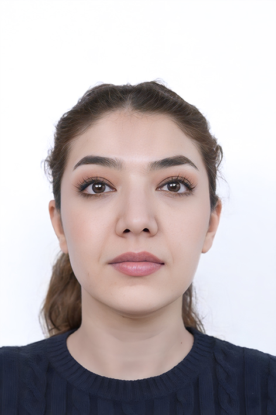

Researcher · Engineer · Innovator
Based at the Railways & Transport Laboratory, National Technical University of Athens. PhD from the Technical University of Crete. Specializing in optimal control, autonomous mobility, and demand-responsive transport systems.

About Me
I am Dr. Niloufar Dabestani, a Postdoctoral Researcher at the Railways & Transport Laboratory, National Technical University of Athens (NTUA), working on demand-responsive transport systems and multimodal mobility. I serve as Technical Coordinator of the EU Horizon project periASTY — responsible for research alignment, deliverables, milestone monitoring, and consortium coordination, addressing mobility, energy, industrial, and governance innovations for peri-urban areas.
I have a strong background in Control Engineering across all academic levels, having earned a bachelor's degree in Electrical Engineering (Control) and a master's degree in Electrical and Mechatronics Engineering with a specialization in Instrumentation Systems. My PhD (2022–2025) was completed at the Dynamic Systems & Simulation Laboratory (DSSL), Technical University of Crete, under the supervision of Prof. Ioannis Papamichail and Prof. Markos Papageorgiou, within the TrafficFluid ERC Advanced Grant (Horizon 2020, no. 833915).
During my doctoral research, I explored optimal control strategies for lane-free vehicular traffic, including the formation and control of interruptible vehicle platoons, deformable two-dimensional vehicle flocks, and large-scale joint trajectory optimization for connected and automated vehicles operating on lane-free infrastructures. My work draws on constrained nonlinear optimal control, model predictive control, numerical optimization methods, and microscopic traffic flow modeling.
I supervise PhD and master's students, contribute to EU Horizon proposals, and serve as peer reviewer for top international journals and conferences, and actively collaborate with international research partners on ongoing and forthcoming publications.
Focus Areas
Control strategies for autonomous vehicles operating without predefined lanes — including interruptible platoons, deformable 2D flocks, and large-scale joint trajectory optimization for connected and automated vehicles.
Constrained nonlinear optimal control, model predictive control, and numerical optimization methods applied to microscopic traffic flow modeling and multi-vehicle coordination.
Fleet sizing, routing, and scheduling for flexible on-demand mobility systems — including modular electric vehicles, opportunity charging, and multimodal integration.
Background
Dissertation: Optimal Control Strategies for Lane-free Vehicular Traffic.
Advisors: Prof. Ioannis Papamichail & Prof. Markos Papageorgiou.
Research associate — TrafficFluid ERC Advanced Grant (Horizon 2020, no. 833915).
Design of low voltage systems for electrical substations at large-scale industrial infrastructure.
Project engineering for electrical substations.
Thesis: Nonlinear identification of excitation control systems (AVR) and re-tuning of Power System Stabilizer (PSS) parameters.
Quality control engineering for electrical systems.
Thesis: PID controller tuning using Fuzzy Logic — comparative analysis of tuning strategies.
Internship at the Instrumentation Department.
Selected Works
Recognition
IFAC CTS 2024 Conference, Ayia Napa, Cyprus — July 2024. Awarded for joint vehicle path planning research in lane-free traffic.
Oral presentation award, IEEE ITSS Young Professionals Travelling Fellowship Symposium, Chania, Greece — November 2022.
Research associate in the TrafficFluid ERC Advanced Grant project (Grant no. 833915) — one of Europe's most competitive grants.
Session Co-Chair at the IFAC CTS Conference, Ayia Napa, Cyprus — July 2024.
Admitted to the National Organization for Development of Exceptional Talents (acceptance rate below 1%).
Competencies
Let's Connect
Always happy to discuss research collaborations, EU projects, or the future of autonomous and sustainable mobility.